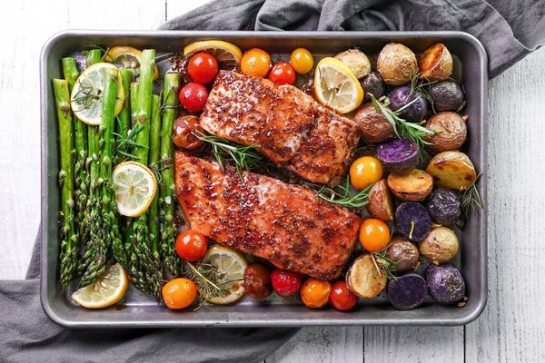

Como preparar un menú saludable
A continuacion les mostraremos 2 platos principales y 2 postres saludables para bajar de peso o mantenerlo y estar en buena forma
- Pechuga de pollo a la plancha con ensalada verde
- Salmon al horno con verduras asadas

- Yogurt griego con frutas y nueces